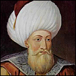

Orhan Gazi

Osmanlý Devleti'nin ikinci sultanýdýr. Osman Beyin oðlu ve Þeyh Edebali'nin torunudur. 1326 yýlýnda babasýnýn yerine geçmiþ ve Osmanlý Beyliðinin sýnýrlarýný altý kat geniþletme baþarýsýný göstermiþtir. Ýlk defa onun döneminde Osmanlý askeri Rumeli'ye ayak basmýþtýr. Örnek idaresi ve yönetimi altýnda bulunanlara karþý gösterdiði merhametle tanýnmýþtýr.Orhan Gazi 1281 yýlýnda Söðüt'te doðdu. Bilindiði gibi babasý Osman Gazi, annesi ise Þeyh Edebali'nin kýzý Mal Hatun'dur. Küçük yaþtan itibaren iyi bir terbiye ve dinî eðitim gördü. Özellikle gazilerin ve meþhur insanlarýn hayat hikâyelerini dinleyerek büyüdü. Osman Beyin yakýn silâh arkadaþlarýndan silâh ve savaþ eðitimi gördü. Muharebe taktiklerini öðrendi. Yine erken yaþlarda beyliðin idarî birimlerinde görev aldý ve bu vesile ile de idarecilik konusunda birikim sahibi olmaya baþladý.
Orhan Gazi, genç yaþta savaþlara katýlmaya baþladý. Özellikle Bizanslýlarla yapýlan savaþlarda bulundu. Gösterdiði cesaret ve kahramanlýðýyla dikkat çekti. Babasýnýn dâvet edildiði ve bir suikast planýnýn hazýrlandýðý düðünde de hazýr bulundu. Ancak, yapýlan plan akim kaldý. Orhan Bey, savaþta esir alýnan ve daha sonra Müslüman olup Nilüfer adýný alan Yarhisar tekfururun (tekfur, Bizans idarî biriminde bir çeþit vali anlamýna gelen ünvandýr) kýzýyla evlendi.
Osmanlý Devleti'nin kuruluþ tarihi olarak genel kabul gören 1299 tarihinden itibaren idarecilik yapmaya baþlayan Orhan Bey Sultanönü bölgesi beyliðine atandý. Bölge beyliðine atanan Orhan Bey, kendi bölgesi ve civarýnda yapýlan muharebe ve çarpýþmalarda önemli baþarýlar elde etti. Bazý fetihleri gerçekleþtirdi. Kendi topraklarýna yapýlan saldýrýlarý önlediði gibi, bu tür saldýrýlarý gerçekleþtirenleri cezalandýrdý.
Yaþý ilerleyen ve bazý rahatsýzlýklarý þiddetlenen Osman Bey, 1320 yýlýndan itibaren yapýlan akýn ve seferlere kendi yerine Orhan Beyi kumandan tayin edip gönderdi. Mudanya, Orhan Beyin komutasý altýndaki birlikler tarafýndan fethedildi. Zamanla Bursa'nýn etrafýndaki kaleler de fethedilerek Bursa muhasara altýna alýnmaya baþlandý. Orhan Bey, Nisan 1326'da Bursa'yý fethe muvaffak oldu. 1326 yýlýnda vefat eden Osman Beyin vefatýnýn fetihten önce veya sonra olduðu konusu tartýþmalýdýr. Her iki þekilde nakiller mevcut olmakla birlikte fetih haberini aldýktan sonra öldüðü daha aðýr basmaktadýr. Vefatýndan sonra vasiyetine uyularak Bursa'ya Gümüþlü Kümbet'e defnedilmiþtir.
1326 yýlýnda babasýnýn yerine geçen Orhan Bey, beyliðin merkezini Bursa'ya naklettirdi. Kendisine vezir olarak da Alaeddin Paþa'yý tayin etti. Ýdarî alanda önemli giriþimlerde bulundu. Ýlk Osmanlý parasýnýn Orhan Bey tarafýndan bastýrýldýðý genel kabul görmekle birlikte son zamanlarda Osman Beyin para bastýrdýðýna dair iddialar da ileri sürülmektedir. Bu arada beyliðin deðiþik bölgelerine atamalar yaparak görevliler ve komutanlar gönderdi. Özellikle sýnýr bölgelerine gönderilen komutan ve idareciler beyliðin sýnýrlarýný geniþletme ve fetihlerde bulunma yetkisine de sahip idiler. Bu sebepten dolayý sýnýrlar giderek geniþledi ve bu yayýlma Bizans'ý ciddî bir þekilde endiþelendirmeye baþladý.
Osmanlý ilerleyiþini durdurmak ve o sýralarda devam etmekte olan Ýznik kuþatmasýný kaldýrmak isteyen Bizans imparatoru ordusuyla harekete geçti. Her iki ordu Maltepe (Pelekanon) bölgesinde karþý karþýya geldi. 1329 yýlýnda gerçekleþen bu önemli savaþ gün boyunca devam etti. Gece çekilmeye baþlayan Bizans ordusu Osmanlýlar tarafýndan takip edildi. Ýmparator yaralý bir þekilde canýný zor kurtardý. Yardým alma ümidini yitiren Ýznik Kalesi komutaný þehri teslim etti. Þehir halkýndan isteyenin kalmasý veya eþyalarýyla birlikte göç etmelerine izin verildi. Ýznik'in fethinden sonra beyliðin merkezi geçici olarak buraya nakledildi.
Orhan Bey zamanýnda, beyliðin sýnýrlarý giderek geniþledi. Taraklý, Göynük, Gemlik, Kirmasti, Mihaliç ve Ulubad fethedildi. Osmanlýlar 1341 yýlýnda Üsküdar'a kadar dayandýlar. Bu tarihte Bizanslýlar Üsküdar'ý da Osmanlýlara býrakmak zorunda kaldýlar. Bizans sýnýrlarýna doðru geniþleme olduðu gibi, diðer beyliklerde meydana gelen bazý hadiselerden ötürü bunlarýn bir kýsým topraklarý da Osmanlý ülkesine katýldý. Bu dönemde Balýkesir, Manyas Edincik, Kapýdaðý'nýn aralarýnda olduðu Karesi Beyliðinin topraklarýnýn önemli bir kýsmý Osmanlýlarýn eline geçti.
Bizans Ýmparatorluðu'nda meydana gelen taht kavgalarýndan istifade eden Orhan Bey, oðlu Süleyman Paþa komutasýndaki bir birliði Trakya bölgesine gönderdi. Yapýlacak yardýma karþýlýk Osmanlý askerinin Gelibolu yarýmadasýndaki kalelerden birine yerleþtirilme sözü alýnmýþtý. 1353 yýlýnda Osmanlý askerleri Çimpe kalesine yerleþerek bir ilki gerçekleþtirmiþ oldular. Böylece Osmanlýlar ilk defa Rumeli'ye geçip yerleþmekteydiler. Kýsa bir süre sonra Gelibolu da alýnarak, Viyana kapýlarýna kadar sürecek olan geniþlemenin ve fetihlerin ilk aþamalarý gerçekleþmiþ olmaktaydý.
Rumeli'ye geçen Osmanlý birlikleri bölgenin doðu taraflarýna doðru da harekâtta bulundular. Süleyman Paþa komutasýndaki birlikler Malkara, Keþan ve Çorlu'yu ele geçirdiler. Ele geçirilen yerlere Anadolu'nun muhtelif yerlerinden getirtilen insanlar yerleþtirilerek buradaki Türk-Ýslâm nüfusunun giderek artmasý saðlandý. Süleyman Paþa'nýn vefatýndan sonra, Orhan Beyin diðer oðlu Murad Bey idareyi ele aldý ve bölgedeki ilerleyiþi devam ettirdi. Osmanlý idarecilerinin halka karþý uyguladýklarý sistem ve adaletle insanlarýn kýsa zamanda bu yeni yönetime ýsýnmalarý saðlandý. Bölgeye huzur ve güven geldi.
Örnek bir hayat süren Orhan Gazi halim, selim bir yönetici olarak tanýndý. Yönetiminde bulunanlara merhametli davrandý. Evlâtlarýna daima adaletle hükmetmeleri vasiyet ve uyarýsýnda bulundu. Rumeli'de düþmanlarýnýn çok olacaðýný ve bunlarýn rahat durmayacaklarý ikazýnda bulundu. Gazilerine, dine ve devlete hizmet edenleri unutmamalarýný, zalimleri cezalandýrmakta tereddüt etmemelerini söyledi. En kötü adaletin geç tecelli eden adalet olduðunu ve bu hususa dikkat etmelerini tembihledi.
Orhan Beyin örnek ahlâký ve yönetim anlayýþýna hayran kalan diðer bölge halký ve yöneticileri, Osmanlý idaresini arar hale geldiler. Bu durum, Osmanlý topraklarýnýn giderek geniþlemesine önemli bir sebep teþkil etti. Müslüman olmayan diðer milletler, kendi idarecileri yerine Osmanlý yönetimini ister duruma geldiler. Bu vb. sebeplerden dolayý Orhan Bey zamanýnda beyliðin sýnýrlarý altý kat arttý. Askerî baþarýlarýn yanýnda gerçekleþtirilen imar faaliyetleri ve oluþturulan idarî teþkilâtla ileride ortaya çýkacak olan büyük bir devletin temelleri atýlmaktaydý.
Uzun bir beylik ve idarecilik döneminden sonra geride beylikten devlete doðru hýzlý adýmlarla ilerleyen bir teþkilât býrakan Orhan Bey 1260 yýlýnda vefat etti. O da babasý gibi Bursa'daki Gümüþlü Kümbet'e defnedildi.
Zülfikar Mecmuasý'nda adý geçen Orhan Bey'in döneminde meydana gelen Rumeli'ye geçiþe iþaret edilmektedir. Kevser Sûresi'ni tefsir eden Bediüzzaman, buradaki âyetlerde Peygamber Efendimize (asm) ihsan edilen ilâhî nimetlere iþaret olduðunu belirtmekte ve Ýstanbul'un fethi ile birlikte, söz konusu haberin genel bir mânâ da ifade ettiðini ve bu vesile ile Osmanlý askerinin Rumeli'ye geçiþine de iþaret bulunduðunu izah etmektedir (Risâle-i Nur Külliyatý, 2. Cild, s. 2320).